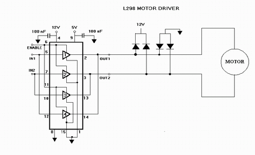
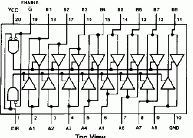
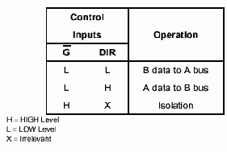
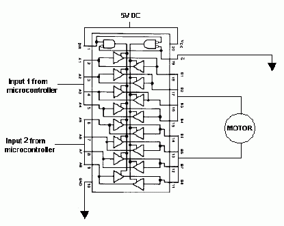
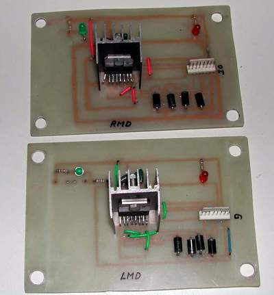

FIRE has two types of motors:
- The motors for locomotion called the LOCOMOTORS (2 nos.)
- The motor for the camera head called the CAM-MOTOR
Both these motors have different voltage and current ratings. The current drawn by both these motors are more than what the Microcontroller Unit (MCU) can provide them.
The ATMEL AT89S8252 microcontroller (MCU) provides a maximum output current of 15mA and hence in no way can drive the motors directly. Hence a circuit is needed in between the microcontroller and the motor which will provide the required amperage to the motor using the low current signal from the MCU. This is the function of the motor driver circuit. Apart from the current, it is also necessary to control the direction of motors as required in a situation. Hence, the two criteria for the motor driver are:
- Provide required current to the motor
- Facilitate direction control
H-bridge for locomotors
The locomotors of FIRE are rated 12V and draws about 3 amperes of current under extreme load for a speed of 35 rpm. Hence the motor driver should provide 3.5 A of current and also facilitate direction control using 15 mA signals from the MCU.
The motor driver is accomplished using an H-Bridge IC the L298N. For an in depth tutorial on the working of the H-Bridge visit
http://www.dprg.org/tutorials/1998-04a
The L298N is an integrated monolithic circuit in a 15-lead Multiwatt package. It is a high voltage, high current dual full-bridge driver designed to accept standard TTL logic levels and drive inductive loads such as relays, solenoids, DC and stepper motors. Two enable inputs are provided to enable or disable the device independently of the input signals. The emitters of the lower transistors of each bridge are connected together and the corresponding external terminal can be used for the connection of an external sensing resistor. An additional supply input is provided so that the logic works at a lower voltage.
Download datasheet here

I used FR306 fast recovery diodes across the motor terminals.
Buffer amplifier for cam-motor
The cam-motor of FIRE is rated 5V and draws about 100 mA of current under extreme load for a speed of 60 rpm. Hence the motor driver should provide 100 mA of current and also facilitate direction control using 15 mA signals from the MCU.
To accomplish the above criteria we can use a simple buffer amplifier available in the form of the 74HC245, Octal 3-state transceiver.
The 74HC245 3-STATE bi-directional buffer utilizes advanced silicon-gate CMOS technology, and is intended for two-way asynchronous communication between data buses. It has high drive current outputs, which enable high-speed operation even when driving large bus capacitances. This circuit possesses the low power consumption and high noise immunity usually associated with CMOS circuitry, yet has speeds comparable to low power Schottky TTL circuits. All inputs are protected from damage due to static discharge by diodes to Vcc and ground.
The internal schematic of the chip is given below


The IC was primarily designed to act as a buffer chip in communication systems. The IC has 8 inputs and 8 outputs and these 16 terminals are bidirectional. Each output can give a maximum 35 mA of current.To provide the required 100mA to the motor, 4 channels of input and the corresponding output are connected in parallel to get 140mA (35mA × 4). The same is done with the other 4 channels and the combined two channels are connected to the two terminals of the motor

Motor direction table
| Input 1 | Input 2 | Motor Direction |
|---|---|---|
| Low | Low | Brake |
| Low | High | Clockwise |
| High | High | Brake |
| High | Low | Anti-clockwise |
This device has an active LOW enable input G and a direction control input, DIR. When DIR is HIGH, data flows from the A inputs to the B outputs. When DIR is LOW, data flows from the B inputs to the A outputs. Whatever logic is available at the input of each channel is also obtained at the outputs
The motor drivers of FIRE are designed in 3 PCB’s, one each for the two H-Bridges for the locomotors and one buffer chip motor driver for the cam-motor.
Images
